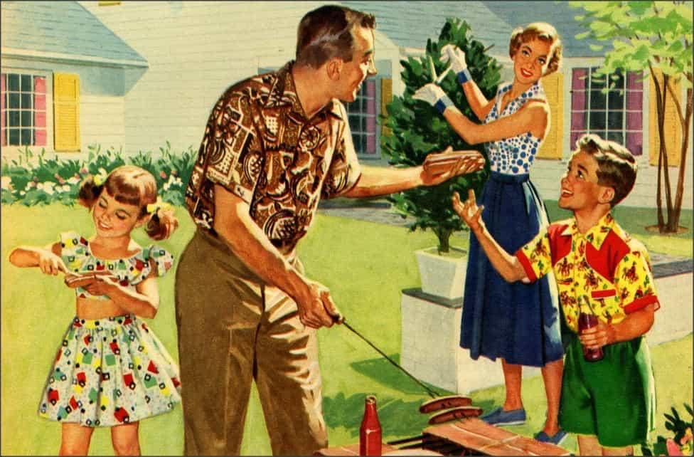

James is a staunch advocate of a lifestyle based upon conservative virtues and principles. He is interested in philosophy, literature and the general dynamics of relationships in our dysfunctional society.


Throughout the years it has become clear to me that most people out there have very little regard or respect for your relationship and seek to actively sabotage your efforts to keep a steady household. The most common saboteur will be your girlfriend’s gay friend.

I would like to give some personal anecdotes that can serve as an example for the general trends out there. The girl who I have a serious relationship with had a gay friend she would occasionally meet for coffee. Fair enough, nothing wrong with that.
One time, due to some random unimportant events, my plans changed and I decided (for logistical reasons) that I would join them for coffee as well. It seemed like a good idea since I had also never met her gay friend (although we did talk about him and he expressed a positive interest in meeting me).
Instead of being glad I showed an interest in getting to know him, he demanded that he first see my girlfriend alone before I joined them. I told my girlfriend this was crap and she told him we were not changing plans. Instead of reacting like a normal person, he took offense at this and started badmouthing about me behind my back. He thus in effect demanded that she have a quasi-relationship with him so that he could discuss his personal problems.
This event eventually lead her to cut all contact with him and she told me some of the debauchery he was into: gay-parties with plenty of butt-sex, drugs, AIDS scares, etc. Of course he retaliated by giving her some unsolicited ‘advice’ with regard to our relationship; advice that was of course ignored.

So we have come to the point where homosexual drug-abusing degenerates who took thousands of penises up their butt think they can have a say in how your heterosexual relationship should go. Without blinking an eye, they will explain to your significant other that she should not lose herself in a relationship and that it is important for her to also have a life separated from her boyfriend as well.
While it might seem obvious that such a person is not to be listened to, it is not that simple. Persons such as that are everywhere and gay best friends are actively promoted in pop culture by other female friends (e.g. “He understands me so well!). And if you only but hint at the fact that you disapprove of such person you will be labelled a bigot, insecure, jealous for no reason and so on.
Some people will shame you into thinking you are a possessive old-fashioned bigot who should learn to grow up. All the while, these gays have zero respect for you and your relationship. If their little special bond with one of their girls is in any way infringed upon by you, they will retaliate and try to undermine your relationship with their polygamous-homo-advice.
I have also heard a story where one of these so called “gay” friends said to one of “his girls” that he occasionally watched heterosexual pornography. We, heterosexual guys, all know what this kind of speech signifies: sexualizing the conversation.
“Oh he is gay so it is okay, he’s fine.”
Wrong. If a homosexual person can enjoy heterosexual pornography and express this enjoyment to your girlfriend, you should seriously consider his true motives. Treat their meeting as any normal meeting with a normal guy and judge from there on out.
Never forget that a large portion of so-called homosexuals are also aroused by heterosexual love, but the world of heterosexuals is not as sexually accessible for them. While they might be close to girls all the time, sexually speaking they might be further away than some random beta loser. Most girls enjoy the company of gay men because they are sexually harmless, but that may not be the case because a hole is still a hole to many gays.
What about lesbian friends, you might ask? They can be categorized into two groups. First, you have the real ones: the short-haired butch types. They are extremely unlikely to have any form of close friendship with a feminine woman, which I am assuming most of you prefer as a girlfriend.
The second type, on the other hand, you have to be extremely wary of. They are the so-called “bi-sexuals,” the “sexually curious” ones or whatever new orientation they make themselves up to be. They tend to be attractive. Whether they are truly attracted (in a loving way) to other women is doubtful, but they are foremost and undoubtedly attracted to male attention and if your girlfriend is anywhere near attractive, they will have no problem using her as a prop in their seduction.
They will entice your girlfriend to perform soft-core lesbian acts in public such as kissing and groping. These types of girls are oftentimes staying out late, drinking copious amounts of alcohol and having enormous amounts of sex.
I don’t think I have to explain what kind of influence they can have on your girlfriend. For these girls, monogamy is nonexistent and they shall openly lament to your girl how boring she has become by staying so long with one man. They are the ones poking her to go have one more drink or visit one more club. It’s not like you would mind them having fun, right? They really do not care about you at all and generally will be even less subtle about it than male gay friends. Perhaps they will even try to make you jealous by hinting that every girl is really “sexually curious.” No form of destabilisation is off-hands for these girls
What advice can I give with regard to this? Be extra cautious with whom your girlfriend is affiliated with if it concerns a “gay” friend. Know that they do not have you interest at heart and will actively seek to undermine the traditional future you have in mind for the two of you. Nonetheless, if your relationship is sound and you exhibit regular male-leading capacities, you should not be worried as much.

Be extra wary when your relationship is over a rough patch or you are removed from your significant other for some time (long distance relationships should be avoided). In such instances, you should be extremely cautious because a gay friend might be the emotional connection she has at that moment and the ideals they propagate are dubious and will undermine any regular monogamous relationship.